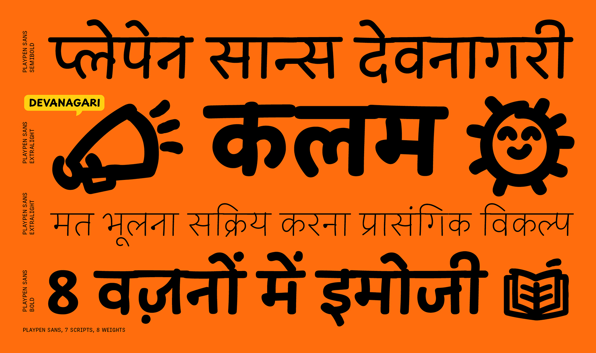

Playpen Sans Devanagari was designed by TypeTogether after over two years of primary research into handwriting education for Latin-based languages, available at primarium.info.
It is a variable font with a weight range from Thin (100) to ExtraBold (800). It supports two different writing systems: Devanagari and Latin, covering 3 Devanagari languages and over 332 Latin-based ones, along with a set of “reward icons” as emoji. The superfamily also includes a Pan-African Latin, Greek, Cyrillic (Playpen Sans), Arabic (Playpen Sans Arabic), Hebrew (Playpen Sans Hebrew), and Thai (Playpen Sans Thai) fonts that expand the language support of the system.
Playpen Sans Devanagari has alternate glyphs for each character that are automatically applied as you type, with a built-in shuffler that both ensures variety and avoids repetition. This adds to the overall organic, spontaneous, and authentic feel of the handwritten style.
To contribute, see github.com/TypeTogether/Playpen-Sans
Playpen Sans Devanagari is a thoughtfully designed typeface that celebrates the natural beauty and diversity of handwritten Devanagari script. Built on the backbone of countless hours spent drawing and redrawing Devanagari letters and combinations by hand, the design carefully selects and refines the most organic and intuitive shapes. Subtle variations, including minor gaps in the headlines, add an organic texture that mimics the imperfections of real handwriting. The font emphasizes intuitive retracing, with carefully crafted imperfect joins and even a sprinkle of strategically placed overlaps, creating a warm and approachable handwritten appearance. Moving away from rigid calligraphic rules, Playpen Sans Devanagari honors the everyday ways people draw their letters, incorporating small idiosyncrasies that make the text feel friendly, relatable, and full of character. This design is a tribute to the human touch, blending authenticity with readability for a truly inviting typographic experience.
Some typefaces excel at just one thing, while others do multiple things well. Playpen Sans stands out by perfectly imitating casual handwriting, blending the organic feel of something made by hand with the precision of a professional digital typeface. Handwritten text is naturally inconsistent, but digital fonts aim for uniformity. Playpen Sans bridges this gap by offering a set of characters that are “the same, but different,” creating an authentic and human-like appearance within the constraints of digital design. It has a set of clear letterforms that are easy to write and recognize. The design forms a bridge between handwritten and typographic letters, friendly to both little readers and adults.
To achieve this, Playpen Sans includes multiple versions of each character and a built-in shuffler, ensuring no two shapes repeat too closely. This results in text that feels spontaneous, fun, and organic, while maintaining the functionality of a modern typeface. Designed with non-designers in mind, it shines in informal settings like greeting cards, invitations, children’s books, and graphic novels. Its clarifying features, such as straight and curved endings for certain letters and optional shapes, add to its versatility.
Playpen Sans combines the best of both worlds: the aesthetic charm of handwritten text and the technological capabilities of a digital font. It’s spontaneous, authentic, and effortlessly bridges the gap between the organic and the digital.
Playpen Sans has emojis for breezy and encouraging uses, that each match the eight named weights of the Latin. Find here the list of all the emojis available. You can copy and paste them into your document editor when using the font. 😉
🌞 😍 ☠ ☹ 😉 ✏ 📖 🏠 ✍ 🧩 🦖 🪐 ✈ 🌠 🎂 🎨 📣 👆 👍 👎 🎯 🪫 ✅ ❌ 🏅 🦄